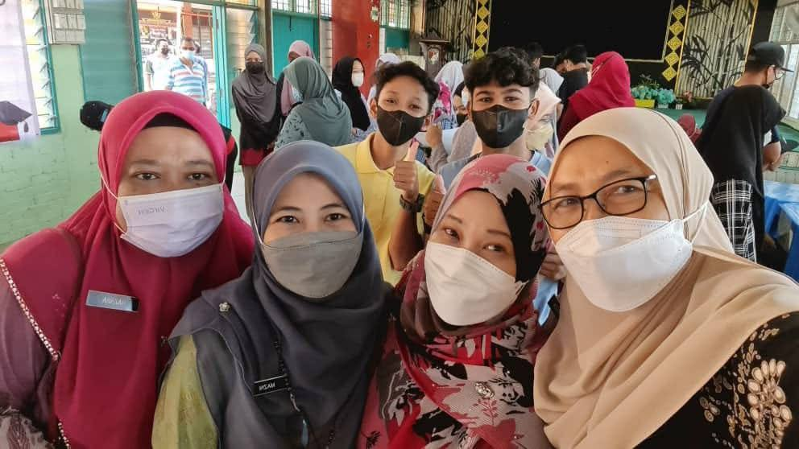
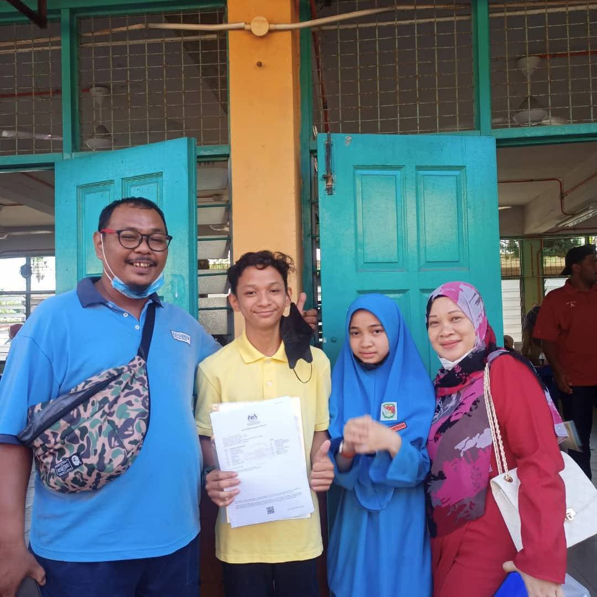

4As in SPM
Finishing high school with 4As in my SPM is a moment I’m truly proud of. It represents the hard work, dedication, and support I received along the way. This milestone isn’t just about grades—it’s about growth, persistence, and the lessons I’ve learned. I’m excited to carry this achievement forward as I continue to strive for success in the future.